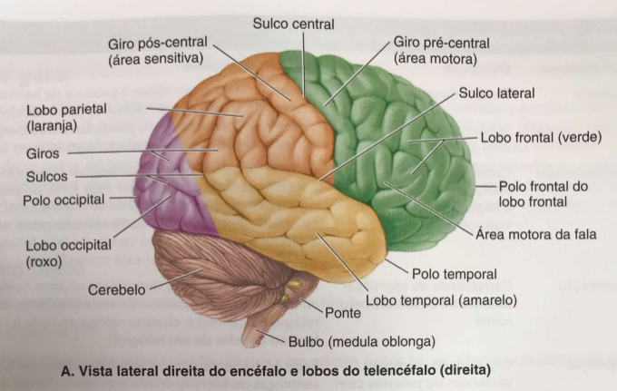

Os exercícios foram estruturados e baseados nos feitos pelos monitores anteriores dessa disciplina.
Cabeça e Pescoço
0/7 questões respondidas
Breve Introdução
A região da Cabeça e do Pescoço são regiões que apresentam boas terminações nervosas e também, uma boa quantidade de veias para serem estudadas. Também é uma região com cavidades e seios diversos para serem identificados, fazendo com que o uso de imagens de TC seja interessante para observação de tais estruturas. No decorrer dos exercícios, iremos utilizar imagens de Ressonância Magnética (RM) para identificação de tecidos moles, principalmente na região cerebral, e imagens de Tomografia Computadorizada (TC) para demais identificações. Por ser uma região bem rica em estruturas, uma maior quantidade de exercícios de imagens (ou uma maior quantidade de estruturas a serem identificadas) serão disponibilizadas.
Exercício 01
Os primeiros exercícios serão de imagens axiais da região da cabeça. Identifique as estruturas marcadas abaixo:
Para quebrar um pouco os exercícios de imagens, gostaríamos de propor um exercício que ajuda a entender a interpretação de imagens médicas: associações com funções das regiões. Com base na imagem a seguir dos Lobos Cerebrais, diga qual a função do Lobo frontal, temporal, occipital e parietal.

Fonte: Extraído dos slides da Professora Dra. Renata Leoni
Exercício 04
Identificação de cavidades
A imagem a seguir se trata de um corte sagital de TC. Com base nela, identifique as 5 estruturas marcadas que representam as cavidades da região da cabeça. Dica: são os ditos 'seios' da face.
Como muitas imagens de TC foram mostradas, é hora de irmos para a melhor modalidade de imagem médica: a ressonância magnética. Tentem notar a diferença entre as imagens ao comparar os exercícios, entenda que, tecidos moles são melhor vistos em IRM. Para facilitar um pouco, as estruturas marcadas são dos ventrículos, glândulas e os núcleos da base.
Para buscar entender a diferença entre as modalidades de imagens, essa questão irá abordar o funcionamento da ressonância magnética, e quais os conceitos por trás da aquisição dessas imagens. Enquanto a radiografia e a tomografia computadorizada utilizam radiação ionizante (feixes de raios-X) que atravessam o corpo e são atenuados pelas estruturas, a Imagem por Ressonância Magnética (RM) gera fatias anatômicas do corpo utilizando um princípio físico completamente diferente.
Exercício 07
Identificação de estruturas em RM
Identifique as estruturas listadas no corte sagital a seguir.
Os exercícios a seguir foram selecionados pela Prof. Renata para prepará-los para a primeira prova. É de suma importância que realizem os exercícios e, depois, confiram as respostas.
Exercício 08
Escolha de estrutura
Durante o exame físico da cabeça e pescoço, o examinador identifica uma proeminência localizada na região lateral da face, formada pela união dos processos do osso zigomático e do osso temporal. Essa estrutura corresponde ao:
Um paciente apresenta uma lesão localizada na região da sela túrcica. Considerando a anatomia dessa região, qual estrutura provavelmente estará diretamente relacionada à lesão?
Um paciente apresenta limitação importante para realizar movimentos de rotação da cabeça, como no gesto de dizer “não”. Qual vértebra cervical está principalmente relacionada a esse movimento?
Um paciente apresenta dificuldade para movimentar o olho para baixo,especialmente ao descer escadas. A avaliação neurológica sugere comprometimento do nervo troclear. Qual músculo ocular está diretamente relacionado a esse nervo?
Compare as funções do atlas (C1) e do áxis (C2), destacando as características anatômicas que permitem a participação dessas vértebras nos movimentos da cabeça.
Exercício 17
Questões discurssiva
Um paciente apresenta uma lesão expansiva da hipófise. Explique a relaçãotopográfica entre a hipófise e as estruturas ósseas e neurais adjacentes e descreva uma possível manifestação clínica decorrente do crescimento da lesão.
Exercício 18
Questões discurssiva
Descreva o trajeto das artérias vertebrais desde sua origem até a formação da artéria basilar. Relacione esse trajeto com as estruturas ósseas da coluna cervical e da base do crânio.
Exercício 19
Questões discurssiva
Explique a drenagem linfática da cabeça e do pescoço, diferenciando a drenagem superficial da drenagem profunda. Quais são os principais grupos de linfonodos envolvidos e qual é o destino final da drenagem linfática dessa região?
O atlas é a primeira vértebra cervical e se diferencia das demais por não possuir corpo vertebral nem processo espinhoso. É formado por dois arcos (anterior e posterior) e duas massas laterais, que se articulam superiormente com os côndilos occipitais, permitindo os movimentos de flexão e extensão da cabeça — o gesto de dizer "sim". Essa articulação é chamada de articulação atlantooccipital.
Áxis (C2)
O áxis possui uma projeção óssea característica denominada processo odontoide (ou dente do áxis), que se projeta superiormente e se encaixa no arco anterior do atlas. Essa estrutura funciona como um pivô, permitindo a rotação da cabeça — o gesto de dizer "não". Essa articulação é chamada de articulação atlantoaxial. O processo odontoide é mantido no lugar pelo ligamento transverso do atlas, cuja ruptura pode ser fatal por comprimir o bulbo e a medula espinhal.
▶
Questão Discursiva 2 — Hipófise e estruturas adjacentes
A hipófise está alojada na sela túrcica, uma depressão do osso esfenoide, sendo recoberta superiormente pelo diafragma da sela (prega da dura-máter). Lateralmente, relaciona-se com os seios cavernosos, que contêm a artéria carótida interna e os nervos oculomotor (III), troclear (IV), abducente (VI) e os ramos oftálmico e maxilar do trigêmeo (V). Superiormente à hipófise situa-se o quiasma óptico, onde ocorre o cruzamento parcial das fibras do nervo óptico.
Manifestação clínica
O crescimento superior da lesão comprime o quiasma óptico, causando hemianopsia bitemporal — perda da visão nas metades externas (temporais) do campo visual de ambos os olhos, pois as fibras que cruzam no quiasma provêm da retina nasal de cada olho e correspondem ao campo temporal. Essa é a manifestação mais clássica do adenoma hipofisário com extensão suprasselar.
▶
Questão Discursiva 3 — Trajeto das artérias vertebrais
As artérias vertebrais originam-se das artérias subclávias, bilateralmente. Ascendem pelo pescoço passando pelos forames transversos das vértebras cervicais de C6 até C1 — característica exclusiva das vértebras cervicais. Ao saírem do forame transverso de C1 (atlas), curvam-se medialmente sobre o arco posterior do atlas e entram no crânio através do forame magno. Já dentro do crânio, as duas artérias vertebrais convergem e se unem na borda inferior da ponte para formar a artéria basilar, que percorre a face anterior do tronco encefálico e irriga o tronco, o cerebelo e parte do telencéfalo (território vertebrobasilar).
▶
Questão Discursiva 4 — Drenagem linfática da cabeça e pescoço
A drenagem superficial capta a linfa da pele e do tecido subcutâneo da cabeça e do pescoço. Os principais linfonodos superficiais estão dispostos em um "colar" na junção da cabeça com o pescoço: linfonodos occipitais, mastoideos (retroauriculares), parotídeos, submandibulares e submentais. Todos drenam para os linfonodos cervicais superficiais, que acompanham a veia jugular externa.
Drenagem profunda
A drenagem profunda recolhe a linfa das estruturas mais internas: faringe, laringe, tireoide, língua e músculos profundos. Os linfonodos cervicais profundos acompanham a veia jugular interna e são divididos em grupo superior (linfonodo juguloomohioideo e jugulo-digástrico — importante na drenagem da tonsilas e língua) e grupo inferior. Todo o sistema converge para o tronco jugular, que desemboca no ducto torácico (à esquerda) ou no ducto linfático direito (à direita), e daí na junção das veias subclávias com as jugulares internas — os ângulos venosos.
Gabarito — Questões Discursivas Restantes
▶
Questão Discursiva 1 — As três camadas das meninges
Camada mais externa, espessa e resistente, formada por tecido conjuntivo denso. No crânio apresenta duas lâminas: a externa (periosteal, aderida ao osso) e a interna (meníngea). As duas lâminas se separam para formar os seios venosos durais, por onde drena o sangue venoso do encéfalo. Emite pregas que dividem a cavidade craniana: foice do cérebro, tenda do cerebelo e diafragma da sela.
Aracnoide
Camada intermediária, delicada, avascular, separada da dura-máter pelo espaço subdural (virtual) e da pia-máter pelo espaço subaracnoide. Este último é real e contém o líquido cerebrospinal (CSF). A aracnoide emite projeções chamadas granulações aracnoides que penetram nos seios venosos durais e permitem a reabsorção do CSF para a circulação venosa.
Pia-máter
Camada mais interna, extremamente delicada e altamente vascularizada, que adere intimamente à superfície do encéfalo e da medula espinhal, acompanhando todos os sulcos e giros. É a única meninge que penetra nas fissuras cerebrais. Fornece suporte vascular às estruturas nervosas superficiais.
O CSF é produzido principalmente pelos plexos coroides, localizados nos ventrículos laterais, no terceiro e no quarto ventrículo. A circulação segue o seguinte trajeto: ventrículos laterais → forame interventricular (de Monro) → terceiro ventrículo → aqueduto cerebral (de Sylvius) → quarto ventrículo → aberturas laterais (forames de Luschka) e mediana (forame de Magendie) → espaço subaracnoide, onde banha a superfície do encéfalo e da medula espinhal.
Reabsorção
O CSF é reabsorvido pelas granulações aracnoides, que são protrusões da aracnoide para o interior dos seios venosos durais — especialmente o seio sagital superior. A pressão do CSF no espaço subaracnoide é maior que a pressão venosa nos seios, o que cria um gradiente que permite a passagem do CSF para a circulação venosa. O bloqueio dessa reabsorção ou da circulação resulta em hidrocefalia com aumento da pressão intracraniana.
▶
Questão Discursiva 3 — Substância cinzenta e substância branca
Formada predominantemente por corpos celulares de neurônios, dendritos, células da glia e capilares. No encéfalo, a substância cinzenta está localizada perifericamente, formando o córtex cerebral e o córtex cerebelar, além de núcleos profundos (gânglios da base, tálamo, hipotálamo). É responsável pelo processamento e integração das informações nervosas. Na TC aparece com densidade intermediária (cinza) e na RM em T1 aparece mais escura que a substância branca.
Substância branca
Formada predominantemente por axônios mielinizados e células da glia (oligodendrócitos). A mielina, de composição lipídica, confere a coloração esbranquiçada e permite a condução rápida dos impulsos nervosos. No encéfalo, está localizada internamente, abaixo do córtex, e é organizada em tratos ou fascículos que conectam diferentes regiões cerebrais entre si (fibras de associação), os dois hemisférios (fibras comissurais — corpo caloso) e o córtex às estruturas subcorticais (fibras de projeção).
Localizado no diencéfalo, o tálamo é a principal estação de retransmissão sensorial do encéfalo. Quase todas as informações sensoriais que chegam ao córtex cerebral passam pelo tálamo, que as organiza e distribui para as áreas corticais específicas (visão, audição, tato, dor, propriocepção). Também participa do controle motor e das funções de atenção e consciência. É formado por vários núcleos com funções distintas.
Hipotálamo
Localizado abaixo do tálamo, o hipotálamo é o principal centro de regulação da homeostase do organismo. Controla funções autonômicas (frequência cardíaca, pressão arterial, temperatura corporal), endócrinas (controla a hipófise através de hormônios liberadores e inibidores), além de regular comportamentos básicos como fome, sede, sono, ciclo circadiano e comportamento reprodutivo. Apesar de seu tamanho reduzido, é uma das estruturas mais complexas e essenciais do sistema nervoso central.
▶
Questão Discursiva 5 — Organização do tronco encefálico
Porção mais superior do tronco encefálico, entre o diencéfalo e a ponte. Contém os colículos superiores e inferiores (reflexos visuais e auditivos), os núcleos dos nervos oculomotor (III) e troclear (IV), a substância negra (controle motor, relacionada ao Parkinson) e o núcleo rubro. O aqueduto cerebral atravessa o mesencéfalo conectando o terceiro ao quarto ventrículo.
Ponte (Metencéfalo)
Porção média, localizada entre o mesencéfalo e o bulbo. Contém os núcleos dos nervos trigêmeo (V), abducente (VI), facial (VII) e vestibulococlear (VIII). A ponte conecta o cerebelo ao tronco encefálico através dos pedúnculos cerebelares médios e participa do controle da respiração (centro pneumotáxico e apnêustico) junto ao bulbo.
Bulbo (Mielencéfalo)
Porção mais inferior, contínua com a medula espinhal. Contém os núcleos dos nervos glossofaríngeo (IX), vago (X), acessório (XI) e hipoglosso (XII), além dos centros vitais cardiovascular e respiratório. As pirâmides bulbares, onde ocorre a decussação das fibras corticoespinhais, estão na face anterior do bulbo — esse cruzamento explica por que lesões de um hemisfério cerebral causam déficits motores no lado oposto do corpo.